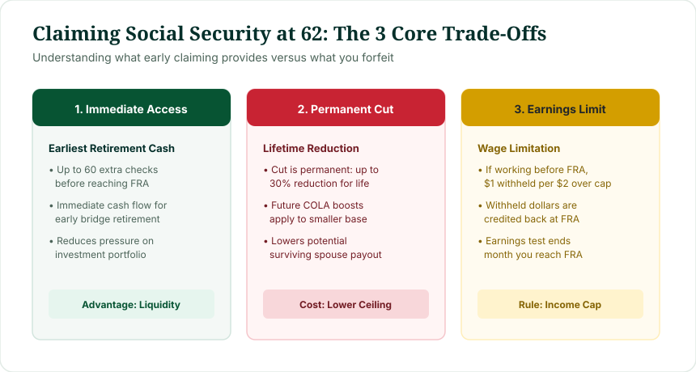
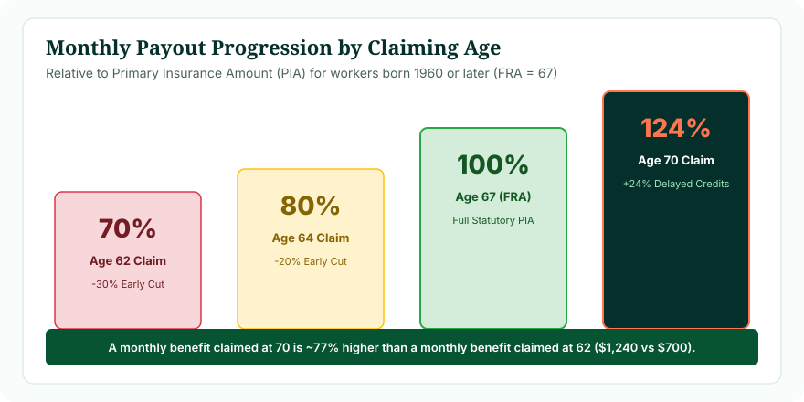

Yes, you can get Social Security at age 62, provided you have earned at least 40 Social Security work credits (approximately 10 years of covered work). However, age 62 is considered an early claim. For anyone born in 1960 or later (whose Full Retirement Age is 67), claiming at 62 results in a permanent 30% reduction in your monthly benefit check for the rest of your life.
For millions of American workers approaching their sixties, the question "can you get Social Security at 62?" marks the starting point of retirement planning. Social Security at age 62 is the earliest statutory opportunity to begin collecting monthly retirement checks. However, early claiming is a double-edged sword: while it provides immediate cash flow up to five years before your Full Retirement Age, it locks in a permanent monthly reduction and introduces wage restrictions through the Retirement Earnings Test.
1. What Happens If You Claim Social Security at 62?
When you file for Social Security at age 62, the Social Security Administration begins paying you monthly benefits based on your 35 highest-earning years. However, because you are claiming prior to your Full Retirement Age, three major rules take effect:

Figure 1: The three critical trade-offs governing early retirement claims at age 62.
- Your Monthly Check Is Permanently Cut: The monthly benefit you receive is substantially lower than your unreduced Primary Insurance Amount (PIA). This reduction is permanent—it does not expire when you turn 66 or 67.
- You Are Subject to the Earnings Test: If you continue working after claiming at 62, the SSA will withhold part or all of your benefits if your earned income exceeds the annual statutory earnings limit ($23,400 in 2025).
- Your Cash Flow Starts Immediately: You receive monthly checks right away, potentially providing 36 to 60 extra payments before reaching your Full Retirement Age.
2. Why Is Age 62 the Early Benchmark?
Congress introduced age 62 claiming for women in 1956 and extended it to men in 1961. The rationale was actuarial neutrality: under the mortality tables of the mid-20th century, a worker claiming early at 62 with a smaller monthly check was expected to receive approximately the same cumulative lifetime payout as an identical worker who waited until 65 for a larger check.
Today, age 62 remains the legal gateway for retirement entitlement. You cannot claim Social Security retirement benefits at age 60 or 61 (unless applying for survivor benefits, which can begin at age 60, or disability benefits).
3. Age 62 vs Full Retirement Age: The Permanent Cut
The difference between claiming at 62 and waiting for your Full Retirement Age (FRA) depends directly on your birth year. Under the statutory schedule:
- Workers Born 1943–1954 (FRA 66): Claiming at 62 is 48 months early, resulting in a 25.0% lifetime reduction (you receive 75% of your PIA).
- Workers Born 1955–1959: Claiming at 62 results in a sliding reduction ranging from 25.83% to 29.17%.
- Workers Born 1960 or Later (FRA 67): Claiming at 62 is 60 months early, resulting in a 30.0% lifetime reduction (you receive 70% of your PIA).
4. How Much Is Social Security Reduced at 62? The Exact Math
The SSA calculates early claiming reductions using a statutory two-tier formula codified under 20 C.F.R. § 404.410:
Statutory Early Claiming Reduction Formula
Tier 2: 5/12 of 1% (0.4167%) per month for each additional month up to 24 months
For an individual born in 1960 or later with an FRA of 67 claiming at exactly 62:
First 36 months: 36 × (5/9 of 1%) = 20.0% reduction
Next 24 months: 24 × (5/12 of 1%) = 10.0% reduction
Total Lifetime Reduction: 20.0% + 10.0% = 30.0% permanent cut
This means if your full monthly benefit earned at age 67 would be $2,000, claiming at 62 permanently locks your starting check at $1,400 per month.
5. Can You Get Social Security at 62 If You Are Still Working?
Yes, you can collect Social Security at 62 while continuing to work, but you must navigate the Retirement Earnings Test (RET):
- The Annual Exempt Threshold: In 2025, the limit is $23,400 per year (adjusted annually for national wage inflation).
- The $1 for $2 Withholding Rule: If you are under your Full Retirement Age for the entire year, the SSA withholds $1 in benefits for every $2 you earn above $23,400.
- The Year You Reach FRA: In the calendar year you attain your Full Retirement Age, a higher limit applies ($62,160 in 2025), and the SSA withholds $1 for every $3 earned above that limit, counting only earnings before the month you hit FRA.
- At FRA and Beyond: The Retirement Earnings Test is eliminated completely. You can earn millions of dollars with zero benefit withholding.
6. What Happens to Withheld Benefits?
A widespread myth is that money withheld under the earnings test is lost forever. In reality, withheld benefits are credited back to you when you reach Full Retirement Age.
When you achieve your FRA, the SSA automatically recalculates your monthly benefit to remove the early reduction penalty for each month your check was completely withheld. For example, if you claimed at 62 but your wages caused 12 monthly checks to be withheld over the next five years, your benefit at FRA is adjusted as if you had claimed at age 63 rather than 62. Your monthly payment increases permanently from that point forward.
7. What If You Wait Until Full Retirement Age?
Waiting until your Full Retirement Age (67 for those born in 1960 or later) guarantees 100% of your Primary Insurance Amount. In addition:
- You avoid the 30% lifetime penalty.
- The Retirement Earnings Test disappears completely.
- Your baseline for future annual Cost-of-Living Adjustments (COLAs) is higher, meaning percentage increases produce larger nominal dollar gains.
8. What If You Wait Until Age 70?
Delaying claims past your FRA unlocks Delayed Retirement Credits (DRCs) of 8% per year (two-thirds of 1% per month). For someone with an FRA of 67 waiting until 70:
36 months × (2/3 of 1%) = +24.0% statutory bonus above your 100% PIA.
9. Social Security at 62 vs 67 vs 70: Benefit Progression
Visualizing the benefit curve across claiming ages highlights the dramatic spread in monthly cash flow:

Figure 2: Relative monthly payout progression across key claiming ages for workers with an FRA of 67.
A monthly benefit claimed at age 70 is 77.1% higher than the same benefit claimed at age 62 ($1,240 vs $700 per $1,000 PIA). This substantial spread forms the basis of retirement claiming decisions.
10. Why Might Someone Choose to Claim at 62?
Despite the permanent reduction, claiming at 62 is the rational choice for many individuals under specific circumstances:
- Immediate Health Challenges: Individuals with serious medical diagnoses or lower life expectancy often benefit from collecting payments immediately rather than delaying for higher checks they may not live to enjoy.
- Involuntary Unemployment: Older workers who lose employment or face physically demanding labor can use early Social Security as an essential income bridge.
- Protecting Investment Portfolios: In bear markets, taking Social Security at 62 can allow retirees to avoid liquidating equities at depressed prices.
- Coordinating with a Higher-Earning Spouse: A lower-earning spouse might claim at 62 while the higher-earning spouse delays until 70 to maximize survivor benefit protection.
11. Why Might Someone Choose to Wait Beyond Age 62?
Conversely, waiting past 62 makes compelling financial sense when:
- High Personal Longevity: If you and your family have a history of living into your mid-80s or 90s, delaying pays off significantly once you pass the break-even age (typically around age 78 to 82).
- Continued High Earnings: If you earn substantially more than $23,400 per year, early claiming triggers earnings-test benefit withholdings anyway.
- Maximizing Survivor Protection: If you are the household's primary breadwinner, delaying to 70 maximizes the lifetime survivor benefit your spouse can inherit after your death.
12. Retiring from Work at 62 vs Claiming Social Security at 62
It is vital to understand that retiring from your job and claiming Social Security are two separate decisions:
You can retire from your job at age 62 and choose not to touch Social Security. You can spend from cash reserves, taxable brokerage accounts, or traditional IRAs for several years, allowing your Social Security benefit to grow by 7% to 8% per year until FRA or age 70. Treating your career retirement and benefit claiming as independent decisions gives you maximum flexibility.
13. Practical Numerical Examples
Scenario 1: Full Benefit (PIA) of $2,200 at FRA 67
Claiming at Age 62: Monthly benefit = $2,200 × 70% = $1,540 per month.
Claiming at Age 67: Monthly benefit = $2,200 × 100% = $2,200 per month.
Claiming at Age 70: Monthly benefit = $2,200 × 124% = $2,728 per month.
Difference: Waiting until 70 yields $1,188 more per month ($14,256 more annually) than claiming at 62.
Scenario 2: Working While Claiming at 62
A 62-year-old earns $35,400 in wages in 2025. This is $12,000 above the $23,400 exempt limit. The SSA withholds $1 for every $2 excess: $12,000 ÷ 2 = $6,000 in withheld benefits. If their monthly benefit is $1,500, the SSA will withhold 4 monthly checks. At FRA, the SSA will adjust their benefit upward by 4 months of early penalties.
Calculate Your Age 62 and FRA Dates
Enter your birth date in our Social Security Age Calculator to see your earliest eligibility date at 62, your Full Retirement Age date, and your age 70 milestone.
Calculate My Social Security Dates →14. Frequently Asked Questions
Can you get Social Security at 62?
Yes. Age 62 is the earliest age at which eligible workers who have earned 40 Social Security credits can begin receiving retirement benefits.
How much is Social Security reduced if you claim at 62?
For workers with a Full Retirement Age of 67 (born in 1960 or later), claiming at 62 results in a permanent 30% reduction from their unreduced Primary Insurance Amount. For those with an FRA of 66, the reduction is 25%.
Is the benefit reduction at 62 permanent?
Yes. The reduction is permanent for the rest of your life. Your benefit check does not automatically increase to 100% when you reach your Full Retirement Age.
Can you collect Social Security at 62 if you are still working?
Yes, but you are subject to the Social Security Retirement Earnings Test. If your annual earned wages exceed the statutory limit, $1 in benefits is withheld for every $2 earned above the cap until you reach Full Retirement Age.
Do you lose withheld benefits permanently under the earnings test?
No. When you reach Full Retirement Age, the SSA recalculates your monthly benefit upward to credit you for any months in which your benefit was withheld due to excess earnings.
Does claiming at 62 affect Medicare eligibility?
No. Claiming Social Security at 62 does not give you Medicare earlier. Medicare eligibility remains fixed at age 65 for the vast majority of beneficiaries.
Can you retire from your job at 62 without claiming Social Security?
Yes. You can stop working at 62 and live off other savings, personal pensions, or investments, delaying your Social Security claim until FRA or age 70 to maximize monthly benefits.
How does claiming at 62 affect spousal benefits?
Spouses claiming spousal benefits at 62 face a maximum reduction of 35% of the spousal share. Additionally, if the primary earner claims early, it locks in a lower baseline for surviving spouse benefits.
Can you change your mind after claiming at 62?
Under SSA rules, you have a one-time opportunity within 12 months of claiming to withdraw your application (Form SSA-521). However, you must repay all benefits received by you and your family.
What is the primary advantage of claiming Social Security at 62?
The primary advantage is receiving monthly income immediately, providing up to 60 additional checks before age 67, which can be critical for individuals facing poor health or job loss.
16. Reviewed & Methodology
This article analyzes early claiming rules under Title II of the Social Security Act and Title 20 of the Code of Federal Regulations.
- Statutory Reference: Social Security Act Section 202(q) (early reduction formula); Section 203(b) & (f) (Retirement Earnings Test); 20 C.F.R. § 404.410.
- Earnings Test Figures: Annual exempt amounts reflect official Social Security Administration cost-of-living adjustments.
- Disclaimer: This guide provides chronological and statutory analysis for educational purposes. It is not financial, legal, or investment advice. Verify individual benefit determinations with the Social Security Administration.
- Last Editorial Review: October 2026 by Navjeet Kamboj.